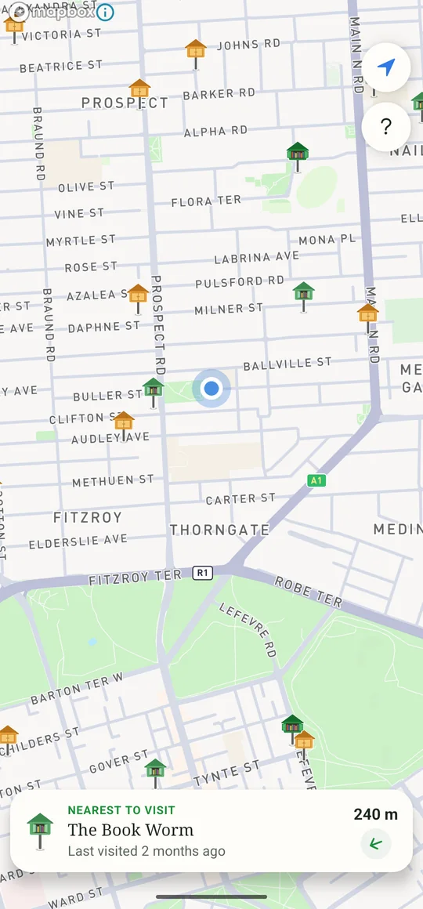
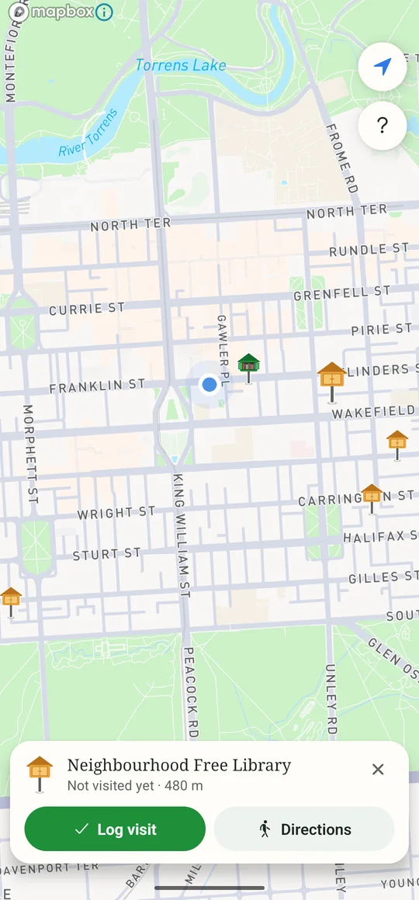
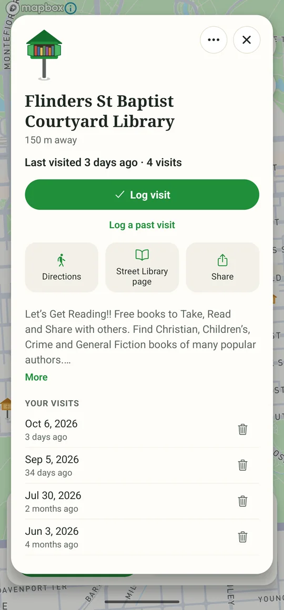
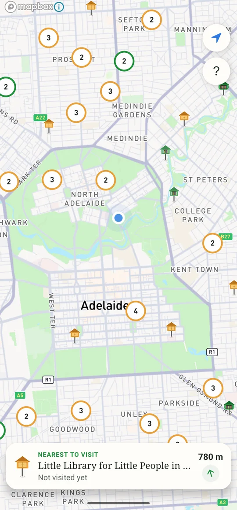
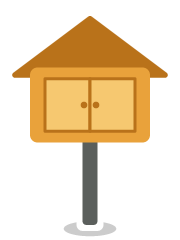
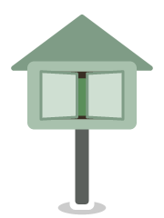

Street libraries near you. Find your next read.
Novel Route maps the street libraries around you and keeps track of the ones you've visited, so you always know which shelves are due another look.
Help test Novel Route Testing now on Android.

-

Find a library
Every street library registered with Street Library Australia, with a note from its keeper and directions to the door.
-

Record your visit
One tap when you stop by. Novel Route remembers when you were last there, so you don't have to.
-

Repeat
Shelves change all the time. Libraries you haven't seen in a while stand out on the map, ready for another browse.
Read the doors
A library's doors open once you've visited, then slowly close again as the weeks go by.

Not visited yet- This month
- In the last six months

Longer ago
The small print
No account and no ads. Your visits stay on your phone.
Library details come from Street Library Australia. If you look after a library that isn't on the map, register it with them and it'll turn up here. Novel Route isn't affiliated with Street Library Australia.
Novel Route is a small, free project made by a street library regular. The code is on GitHub, and hello@novelroute.app reaches a person.